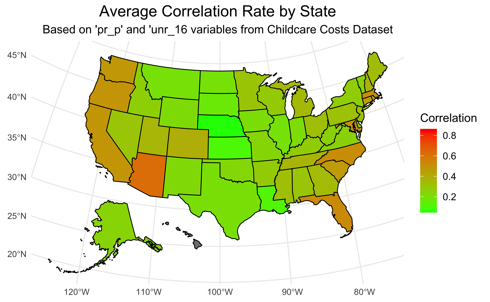

pacman::p_load(tidyverse, here, dplyr, ggplot2, ggpointdensity, viridis, ggpubr, sf, tigris, patchwork, usmap,stats)CHLD <- read_csv(here('data','childcare_costs.csv'))Rows: 34567 Columns: 61
── Column specification ────────────────────────────────────────────────────────
Delimiter: ","
dbl (61): county_fips_code, study_year, unr_16, funr_16, munr_16, unr_20to64...
ℹ Use `spec()` to retrieve the full column specification for this data.
ℹ Specify the column types or set `show_col_types = FALSE` to quiet this message.conty <- read_csv(here('data','counties.csv'))Rows: 3144 Columns: 4
── Column specification ────────────────────────────────────────────────────────
Delimiter: ","
chr (3): county_name, state_name, state_abbreviation
dbl (1): county_fips_code
ℹ Use `spec()` to retrieve the full column specification for this data.
ℹ Specify the column types or set `show_col_types = FALSE` to quiet this message.combine <- merge(CHLD,conty,by=c('county_fips_code'),all.x=T)
combine <- combine|>filter(!state_name%in%c("Hawaii"))ggplot2::theme_set(ggplot2::theme_minimal(base_size = 10))
# set width of code output
options(width = 65)
# set figure parameters for knitr
knitr::opts_chunk$set(
fig.width = 7, # 7" width
fig.asp = 0.618, # the golden ratio
fig.retina = 3, # dpi multiplier for displaying HTML output on retina
fig.align = "center", # center align figures
dpi = 300 # higher dpi, sharper image
)ggplot(combine,aes(x = pr_p, y = unr_16)) +
geom_point() +
geom_pointdensity() +
geom_abline (slope=1, linetype = "dashed", color="Red") +
scale_color_viridis() +
labs(title = "Family Pverty vs Unemployment Rate",
subtitle = "Considering all the counties",
x = 'Family Poverty(%)',
y= 'Unemployment Rate (%)',
color = "Density\n"
) +
stat_cor(method = "pearson", label.x = 3, label.y = 30)
child_cost <- read.csv(here('Data','childcare_costs.csv'))
counties <- read.csv(here('Data','counties.csv'))
# Calculate average unemployment
averaged_unemployment <- child_cost %>%
group_by(county_fips_code) %>%
summarise(mean_unr_16 = mean(unr_16, na.rm = TRUE))
correlation_data <- combine %>%
group_by(county_fips_code) %>%
summarize(correlation = cor(pr_p, unr_16))
geo_data <- counties %>%
select(county_fips_code, state_abbreviation) %>%
left_join(correlation_data, by = "county_fips_code")
state_correlation <- geo_data %>%
group_by(state_abbreviation) %>%
summarise(mean_cor_state = mean(correlation, na.rm = TRUE))
# Rename 'state_abbreviation' to 'state' for compatibility with usmap
state_correlation <- state_correlation %>%
rename(state = state_abbreviation)
# Plot the state-level map
state_map <- plot_usmap(data = state_correlation, values = "mean_cor_state", regions = "states") +
scale_fill_continuous(name = "Correlation", low = "green", high = "red", na.value = "grey50") +
labs(title = "Average Correlation Rate by State",
subtitle = "Based on 'pr_p' and 'unr_16 variables from Childcare Costs Dataset") +
theme_minimal() +
theme(legend.position = "right",
plot.title = element_text(hjust = 0.5, size = 16),
plot.subtitle = element_text(hjust = 0.5, size = 12),
legend.title = element_text(size = 12),
legend.text = element_text(size = 10))
# Display the state-level map
print(state_map)